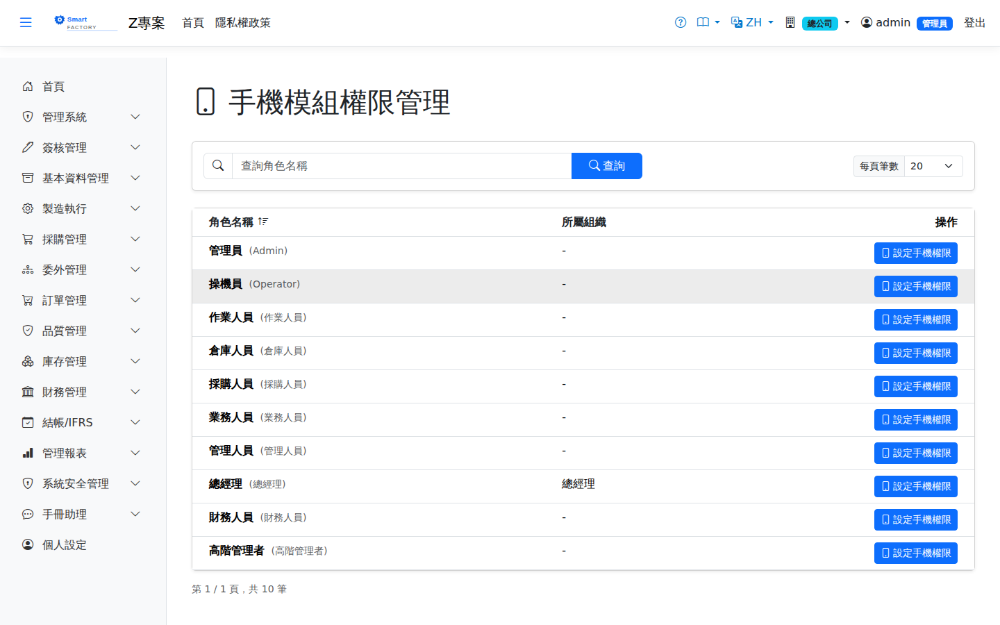
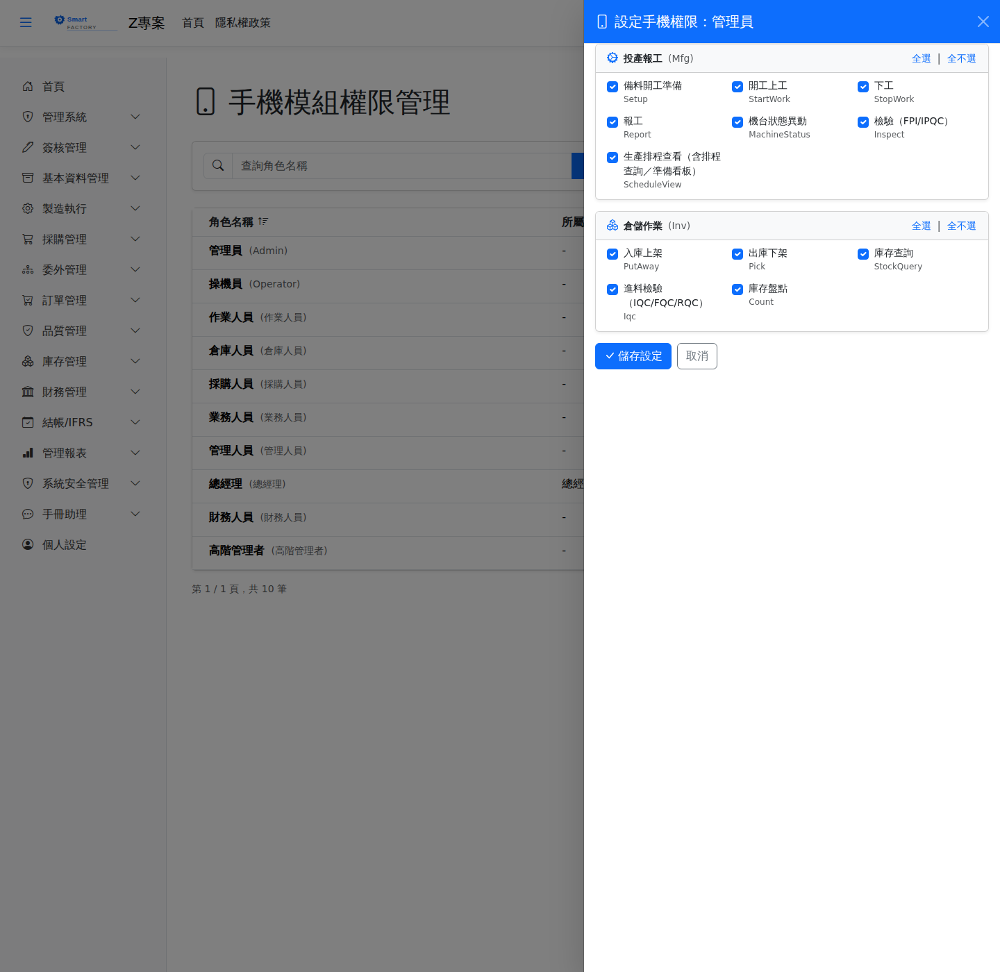

手機模組權限Mobile Module Permissions
手機模組權限決定各角色在Mobile module permissions decide what each role may do in the 手機端（PWA）mobile app (PWA)能做哪些現場作業。它與桌面版的「功能權限設定」是 for shop-floor work. It is 兩套獨立的權限a separate set of permissions：桌面版勾好，手機端仍是關閉的；反之亦然。 from the desktop "Permission Settings": ticking the desktop matrix leaves the phone closed, and the other way round.


可授權的模組與動作Modules and actions you can grant
權限是Permissions are granted 逐一動作action by action授權的，勾了哪個動作，該角色的人在手機上才做得了那件事。: a person with that role can only do on the phone what has been ticked here.
| 模組Module | 動作Actions |
|---|---|
| 投產報工Production reporting | 備料開工準備、開工上工、下工、報工、機台狀態異動、檢驗（FPI／IPQC）、生產排程查看（含排程查詢與準備看板）、領料／退料申請、超量核准Setup before starting, start work, stop work, report production, change machine status, inspection (FPI / IPQC), viewing the production schedule (including the schedule query and the preparation board), requisition / return requests, and over-quantity approval |
| 倉儲作業Warehouse operations | 入庫上架、出庫下架、庫存查詢、進料檢驗（IQC／FQC／RQC）、庫存盤點、工單發退料、備料作業、委外收料、超量核准Put away, pick, stock enquiry, incoming inspection (IQC / FQC / RQC), stock counting, work-order issue / return, staging, outsource receiving, and over-quantity approval |
操作步驟Steps
Mobile.Permission 的異動，記載角色與這次核准的動作數量。要追查手機權限何時被誰改過，請到 the system writes an entry to the audit log with the entity type Mobile.Permission, recording the role and how many actions were allowed. To trace when and by whom the mobile permissions were changed, go to 稽核日誌Audit Log以此類型篩選。 and filter by that entity type.
手機端登入不進去／看不到功能Cannot sign in on the phone, or no functions appear
| 現象Symptom | 先確認什麼What to check first |
|---|---|
| 登得進去，但首頁沒有任何作業Signs in, but the home screen has no operations | 該使用者目前作用中的角色在本畫面一個動作都沒勾。注意一個人可能有多個角色，起作用的是The role currently in effect for that user has no action ticked here. Note that a person may hold several roles, and what counts is 目前作用中的那一個the one currently in effect。. |
| 看得到模組，但按下去被拒絕The module is visible but the action is refused | 模組內的個別動作未勾選——模組與動作是分開授權的。The individual action inside the module is not ticked; modules and actions are granted separately. |
匯出Export
清單可匯出 Excel（.xlsx）、CSV 或 JSON，內容為角色名稱、中文名稱與組織單位；與桌面版權限畫面相同，匯出的是角色清單而非勾選內容。The list can be exported as Excel (.xlsx), CSV or JSON, containing the role name, its Chinese name and its organization unit. As on the desktop permission screen, the export is the list of roles, not the ticks.